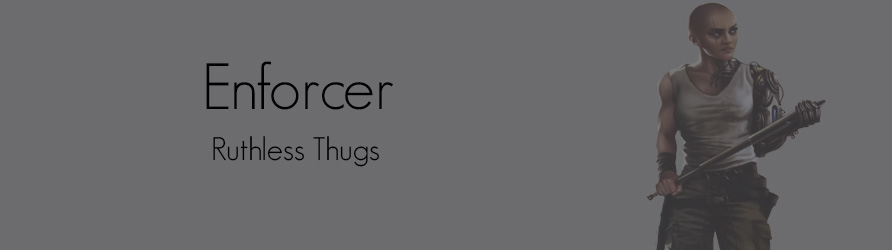
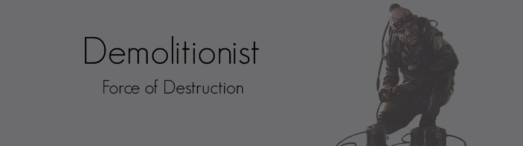
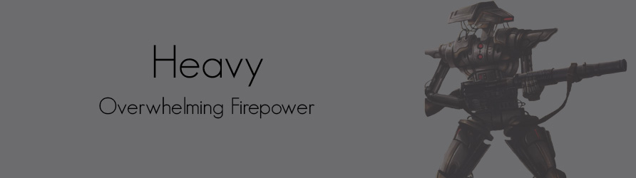
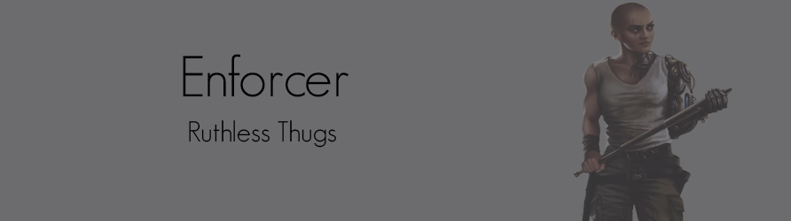
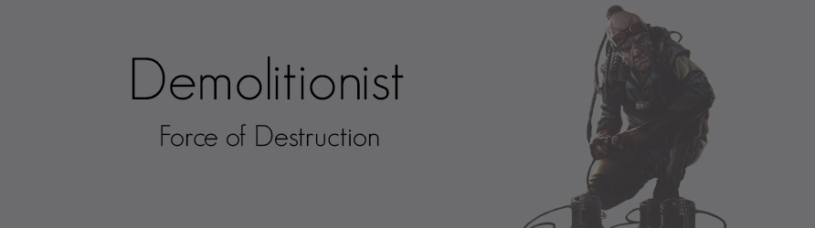
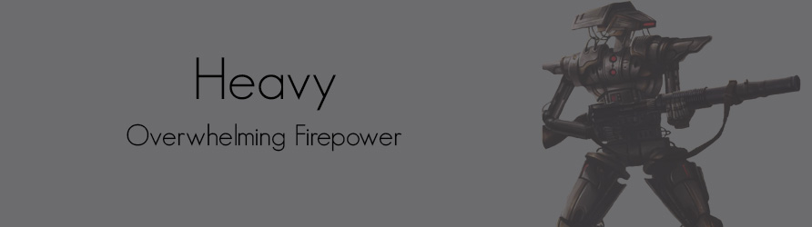

Hired Gun Specializations
When it comes to fighting, the Hired Gun is at the forefront. He's less of an independent operator than the Bounty Hunter, preferring to have a defined mission, an objective to achieve, and some credits to spend when the job is done. Hired Guns are muscle and applied force, meant to defend or attack as the situation requires. They deal damage or protect others for credits, and this makes them simple and sometimes refreshngly direct.
A Hired Gun one typically encounters in the Outer Rim ikely came from one of three kinds of backgrounds; he may have been a soldier for the Empire (or, possibly, even for the Old Republic before its fall), he might have served with a planetary or organizational force of some kind, or he simply came up hard, learning how to shoot and fight because that was the only way he could survive. However he came by them, the Hired Gun has the kinds of skills and talents that make it fairly easy to find work in the Outer Rim and the fringes of society.
Many Hired Guns are true mercenaries, either working for themselves or contracted to a guild or company of some kind. Much like Bounty Hunters, the Hired Guns who are part of a guild tend to enjoy a great deal of support. They do not, however, have much in the way of freedom. More than a few Hired Guns have walked away from contracts that either violated their personal ethics or left them feeling completely exploited with terrible terms of service. Unfortunately, such mercenaries are left watching their backs for years after.
Independent Hired Guns enjoy the greatest freedom, yet they also spend a lot of time just trying to find a good job, and preferably one that doesn't give them a life expectancy measured in days. Reputation can mean everything for such professionals, yet a simple test of skills and competency may often result in a better arrangement if the right employer is impressed.
 




